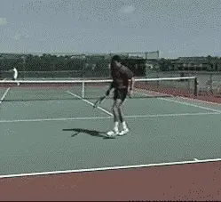
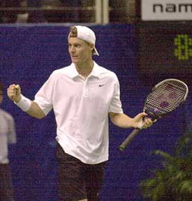
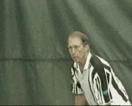
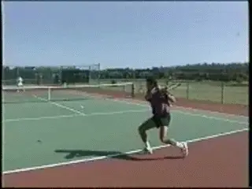
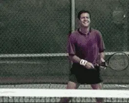

From Negative to Positive¶
By Jim Loehr¶

Even successful players limit their potential with negative thoughts and actions.Is your time on the tennis court punctuated with negative thoughts and self-criticism? Are you frequently disappointed, even bitterly dissatisfied with your tennis, so that you leave the court questioning your ability to play the game?
How does this kind of self-abuse affect your ability to achieve the ideal performance state in tennis? Frequently, we see successful competitive tennis players abuse themselves unmercifully during their matches.
"You're the worst tennis player on the planet. You should just quit this game right now, etc, etc.." Hang around at junior tennis events and you'll see this kind of extreme negativity is all too common.
Yes, some successful players are negative. But the fact is, high negative energy rarely, if ever, brings out a player's real potential or best performance.
It doesn't lead to the biochemistry of the ideal performance state or a sense of fun on the court. If you win, it feels good at the end of the match just to be out from under all that strain.
But if you lose, the negativity can stay with you for hours or even days. In extreme cases, the result can lead to burnout. High negative energy will eventually teach you to hate the game.

High negative energy doesn't lead to fun or playing your best.In less extreme cases, negative thinking simply blocks your development as a player and your ability to enjoy the game and play your best.
A teaching pro I once knew was frustrated working with a promising junior. Hitting backhands, the player would produce beautiful strokes until she missed two or three balls in a row, at which time the stroke would completely disintegrate.
After extensive technical work failed to eliminate the problem, the pro asked her to go inside her mind and observe her internal mental dialogue after she missed the next backhand. "What exactly do you say to yourself after you miss?" he asked her.
To his surprise, the answer came back, "I suck!" It was internal negative self-talk that was the interfering problem, not the stroke itself.
As long as the student was unconsciously berating herself after every error, she was unable to focus on the next shot and proceeded to miss more and more backhands.
Many players, at all levels, are dealing with this kind of negativity without even being aware how it's affecting their play.
The solution is to replace these negative internal messages with positive ones, to learn to think and to talk to yourself in a way that will lead to better performances and ultimately to the ability to achieve your ideal performance state.

To achieve your ideal performance state, you have to replace negative internal messages with positive ones.How can this be accomplished? The first step is simple awareness. Like the student struggling with her backhand, many players are simply not aware of how they are talking to themselves or the affect it may have on their ability to perform.
Start to listen to your internal dialogue. Ask the question: What exactly am I saying to myself in various situations, particularly when I am not playing my best?
Make a list of all the negative on-court responses you discover. "I suck." "I can't hit a backhand." "I never beat this player." "I choke every easy shot." Whatever your own particular negative emotional responses may be, notice exactly when and how they come up on the court.
Now, for every negative response, formulate a specific positive counter response. "I can hit this shot." "Keep trying." "I'll find a way to beat this guy." "I want the opportunity to hit shots under pressure."
Then start to use the counter messages on the court. When you miss a backhand, for example, consciously tell yourself that the miss is no problem and that you'll make the next one. "Give me another one."

Tell yourself that the miss is no problem, "Give me another one!"Initially, you may not be able to halt the negative response from coming up, particularly if it's a long-standing behavior. Don't let this become an excuse for further self-criticism.
When the self-criticisms come up, notice them and then let them go and then immediately counter the negative thought with a positive affirmation.
If you find that the negative thoughts continue, simply say, stop. Then replace the negative message with a positive one instead.
You may raise the objection: "That won't help! I really don't think I can hit that backhand and telling myself I can isn't going to change that."
As powerful as the negativity seems, it wasn't something you were born with. You learned it. And you can learn to be positive instead, if you're willing to make the effort.
It may sound simple, but it's true. The way to change is to simply repeat the positive attitudes you want to acquire over and over and over.

You can learn to be positive on the court if you're willing to make the effort.This is called repetitious thinking. Using it, you can literally reprogram yourself to think positively, in a new way, for the future.
Probably, the ultimate test of a player's ability to deal with negative thinking is when there are disputes over calls.
Bad calls tend to come at the most critical junctures in matches. They can be the real turning points in deciding who wins or loses.
However, it is rarely the call itself that determines the match. Rather, it is usually the player's emotional reaction to the call that affects the outcome.
Does this scenario sound familiar? On the first close call, you let it go, but give your opponent a look. It happens again, so you challenge him about the call.
Reversing himself when he is under attack would be admitting guilt. Next thing, he starts to call every close ball out, and you've got a war on your hands.
Is there another way to handle bad calls in a way that allows you to keep playing your best and maximize your chances of winning the match?
Click image and see if this dispute over a call sounds familiar.
Begin by assuming your opponent is fair and is doing his best to call the lines correctly. Repeated experience has shown that if you treat your opponent with respect and dignity, you'll get better calls in the long run.
Even if your opponent has a reputation for making bad calls, never challenge his integrity by accusing him of cheating, either directly or indirectly.
If you receive what appears to be an obvious bad call, ask for a clarification, but be careful to do this in a non-threatening tone.
An example would be: "Was that ball in or out?" Give your opponent the chance to revise his call to save face.
If you continue to disagree with a series of calls, ask for the linesman by telling your opponent that you would like "to get some help with the line calling."
Rather than fuming over your opponent's behavior, the best response to this situation is to dig in and get challenged. Become one of those players who plays better and gets even more determined when he thinks his opponent is cheating him.
Dealing with tough situations like disputes over calls in a positive way is part of developing a love of the game and the competitive struggle that will last for a lifetime.
 himself who still competes nationally in USTA
events, Jim created the field of Mental
Toughness training with his revolutionary study
of elite pro players. He has been one of the
most influential voices in tennis and tennis
coaching for over 30 years, and is the author of
multiple best selling books. He has expanded his
influence far beyond sports with the creation of
the Human Performance Institute where he and his
staff have worked with hundreds of leaders in
business, law enforcement, and military special
forces. For the last decade he has also directed
an academy for junior players helping young
people learn what winning in life really means.
himself who still competes nationally in USTA
events, Jim created the field of Mental
Toughness training with his revolutionary study
of elite pro players. He has been one of the
most influential voices in tennis and tennis
coaching for over 30 years, and is the author of
multiple best selling books. He has expanded his
influence far beyond sports with the creation of
the Human Performance Institute where he and his
staff have worked with hundreds of leaders in
business, law enforcement, and military special
forces. For the last decade he has also directed
an academy for junior players helping young
people learn what winning in life really means.